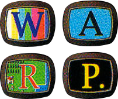

「心のひきだし」を開ける作品が、できました。
A work is born that will open the drawers of your heart.
In this drama, you become its protagonist, Hiroshi, and live a love story that unfolds around the memory of a first love.
Open the drawers of your heart and remember that summer’s first love, and the familiar scent of the wind. In your imagination, a drama that belongs to you alone takes shape.
A pure, bittersweet love story woven from nothing but high-quality sound — a gift from WARP to everyone.
College student Hiroshi Nonomura is dreaming of his childhood. The girl at the next desk was to change schools when summer vacation ended, and the two of them promised to “elope” together — but she never came to their meeting place, the town clock tower. When the new term began, she was already gone.
Hiroshi is woken by his girlfriend, Izumi Sakurai. It is an important day: she is to introduce him to the head of personnel at her company. When he tells her about the dream, Izumi only smiles — “I’ve forgotten all about it.” For she is that same girl, his first love.
But on their way to the interview, Izumi suddenly steps off the subway and disappears into the crowd. Days pass without a word. Izumi has vanished…
-
Voice · HiroshiTakashi
Kashiwabara柏原 崇- Love Letterfilm · 1995
- Shōta no SushiTV · 1996
- Itazura na KissTV · 1996
- Japan Academy Prize: Newcomeraward · 1996
-
Voice · NanaMiho
Kanno菅野 美穂- Eko Eko Azarakfilm · 1995
- Hashiran ka!TV · 1995
- Iguana no MusumeTV · 1996
- Ii Hito.TV · 1997
-
Voice · IzumiRyōko
Shinohara篠原 涼子- Koishisa to Setsunasa to Kokorozuyosa tosingle · 1994
- Kagayaku Kisetsu no Naka deTV · 1995
- PureTV · 1996
- GIFTTV · 1997
- Concept & DirectionKenji Eno 飯野賢治
- “D” (Multimedia Grand Prix, MITI Minister’s Award); “Enemy Zero” (concept, direction, script)
- ScreenplayYūji Sakamoto 坂元裕二
- TV: “Tokyo Love Story”, “Dōkyūsei”, “Tsubasa o Kudasai”; film: “Yuri” (writer, director)
- MusicKeiichi Suzuki 鈴木慶一
- Moonriders; The Beatniks (with Yukihiro Takahashi); composer of “MOTHER” 1 & 2
- ProgrammingNaoya Satō 佐藤直哉
- “Enemy Zero” (programming)
- PlanningOsamu Watanabe 渡辺修
- “Mystic Ark” (planning, scenario)
- Ending ThemeAkiko Yano 矢野顕子
- “Harusaki Kobeni”; best-of album “Hitotsudake”; her first band, Hamonzu

- Title
- Real Sound: The Winds of Regret リアルサウンド ～風のリグレット～
- Genre
- Interactive sound drama · 1 player
- Original
- Sega Saturn, 4 CD-ROMs · © 1997 WARP Inc.
- Audiobook
- 2024 edition · From Yellow to Orange
- Script translation
- English translation of the original screenplay by Devin Malone and whowasphone404
Subtitles for this section are in progress